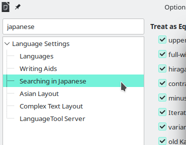
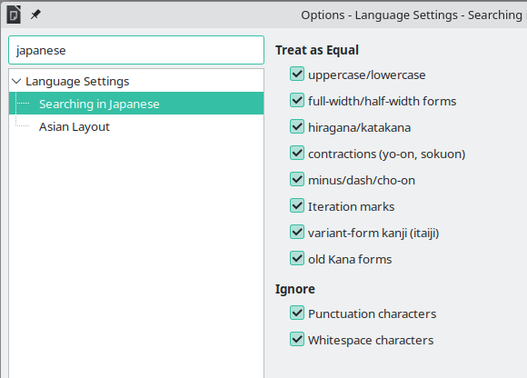
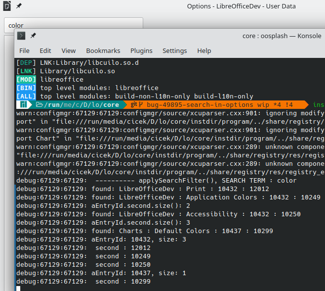
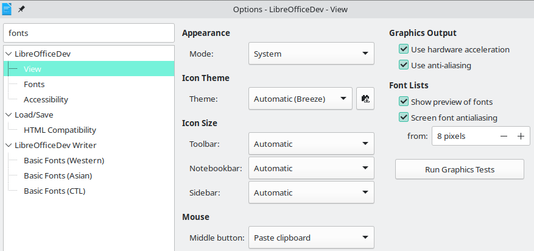
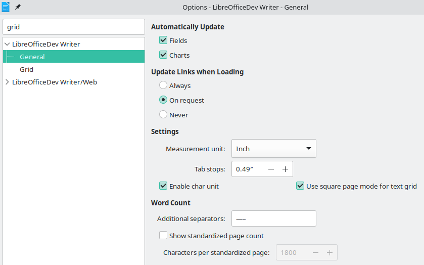

Week #5 and #6 - GSoC 2023 Weekly Report - Search Field in Options
Thanks to my ‘Search Field in Options’ project mentors Andreas Heinisch and Heiko Tietze for their time and guidance. Additionally, thanks to Christian Lohmaier for his reviews and comments about text extraction and makefiles.
Project Report for Week #5 and #6
-
New patchsets submitted (between patchset 5 and 10): https://gerrit.libreoffice.org/c/core/+/152519
-
Modified uiex python script to generate ui strings.
I removed the ./solenv/bin/uiex_options script that almost the same with ./solenv/bin/uiex. Instead of creating a new script, adding an additional option to the existing uiex script -to only print the msgid instead of the full entry-, is better than a different file.
./solenv/bin/uiex:
...
if ( (len(args) != 0) and (args[0] == "getString") ):
mode = "w"
else:
mode = "a"
with open(ofile, mode) as output:
input = check_output(["xgettext", "--add-comments", "--no-wrap", ifile, "-o", "-"], encoding="UTF-8")
po = polib.pofile(input)
if len(po) != 0:
print("", file=output)
for entry in po:
# skip 'stock' entries like "cancel", "help", "ok", etc
# l10ntools/source/localize.cxx will insert one entry for each stock per .po
if entry.msgctxt == "stock":
continue
if (mode == "a"):
keyid = entry.msgctxt + '|' + entry.msgid
print('#. ' + polib.genKeyId(keyid), file=output)
for i, occurrence in enumerate(entry.occurrences):
entry.occurrences[i] = os.path.relpath(occurrence[0], os.environ['SRCDIR']), occurrence[1]
if (mode == "a"):
print(entry, file=output)
else:
print(entry.msgid, file=output)- Search function now removes the child-nodes that do not match with the search term.
The search function now gives better results than the previous version.
Before: (All child-nodes are shown - which is very confusing)

After: (Child-nodes that do not match with the search term are removed. thus, better results!)

-
Refactored the code with clang-format.
-
Search field now goes into focus when Options dialog opens.
...
m_xSearchEdit->grab_focus();
SelectHdl_Impl();- Finally, first node expands itself and selects its first child automatically after the search done.
// select first child of first node after the search done
if (nMatchFound != -1)
{
std::unique_ptr<weld::TreeIter> xEntry;
{
std::unique_ptr<weld::TreeIter> xTemp = xTreeLB->make_iterator();
bool bTemp = xTreeLB->get_iter_first(*xTemp);
while (bTemp)
{
// select only the first child
if (xTreeLB->get_iter_depth(*xTemp) && xTreeLB->get_id(*xTemp).toInt64())
{
xEntry = xTreeLB->make_iterator(xTemp.get());
break;
}
bTemp = xTreeLB->iter_next(*xTemp);
}
}
if (!xEntry)
{
xEntry = xTreeLB->make_iterator();
if (!xTreeLB->get_iter_first(*xEntry) || !xTreeLB->iter_next(*xEntry))
xEntry.reset();
}
if (!xEntry)
return;
std::unique_ptr<weld::TreeIter> xParent(xTreeLB->make_iterator(xEntry.get()));
xTreeLB->iter_parent(*xParent);
xTreeLB->expand_row(*xParent);
xTreeLB->scroll_to_row(*xParent);
xTreeLB->scroll_to_row(*xEntry);
xTreeLB->set_cursor(*xEntry);
xTreeLB->select(*xEntry);
SelectHdl_Impl();
}- Some screenshots from the development



Summary
- New patchsets submitted (between patchset 5 and 10): https://gerrit.libreoffice.org/c/core/+/152519
- Modified uiex python script to generate ui strings.
- Search function now removes the child-nodes that do not match with the search term.
- The search function now gives better results than the previous version.
- Refactored the code with clang-format.
- Search field now goes into focus when Options dialog opens.
- Finally, first node expands itself and selects its first child automatically after the search done.
***
Steps for implementing search functionality in “Tools > Options”:
| 1) Add Search field to “Tools > Options” dialog. | DONE - week #1 | |
| 2) Include Options treeview into searching. | DONE - week #1 | |
| 3) Include Sub-tree elements (child nodes) into searching. | DONE - week #2 | |
| 4) Generate all strings(labels), accessible-names, accessible-descriptions and tooltip-texts of all .ui files in ./cui/* directory, at build-time. | DONE - week #3, #4 (most challenging part) | |
| 5) Fetch the generated data - at run-time. | DONE - week #3, #4 | |
| 6) Include strings(labels), accessible-names, accessible-descriptions and tooltip-texts into searching. | DONE - week #3, #4 | |
| 7) Refactoring the code-base and trying to fix some issues. | now | |
| 8) Implement highlighting feature. | next step | |
| ... | ... | |
***
Patch: https://gerrit.libreoffice.org/c/core/+/152519
Project Mentors: Andreas Heinisch and Heiko Tietze (Thanks for their time and guidance)
GSoC project page: https://summerofcode.withgoogle.com/programs/2023/projects/IKtSHIH1
Enhancement request on Bugzilla: https://bugs.documentfoundation.org/show_bug.cgi?id=49895